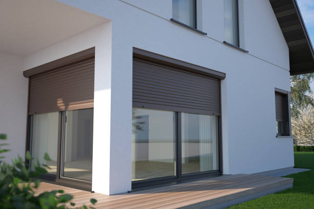

Elevate your home's aesthetic with our top-quality Windows Blinds in Mill City Oregon . Offering a range of styles and materials to match every taste and need. Transform your space today!
Click Here To Call Us (888) 912-1629At Deli Windows Blinds, we understand that the right window coverings can transform any space. Serving Mill City Oregon our top priority is delivering unparalleled quality and style. Whether you’re seeking sleek modern designs or timeless classics, our extensive range of window blinds offers something for every taste and budget.
Our team of experts is committed to providing personalized service and expert advice, ensuring that you find the perfect blinds to complement your home or office. From energy-efficient solutions to custom-fit options, we tailor our products to meet your specific needs.
At Deli Windows Blinds, we pride ourselves on exceptional craftsmanship and reliable installation services. Our blinds are crafted from high-quality materials that not only enhance the aesthetic of your space but also provide durability and functionality. We handle every detail with care, from the initial consultation to the final installation, ensuring a seamless experience.
In Mill City Oregon we are known for our dedication to customer satisfaction and our ability to deliver results that exceed expectations. Whether you’re updating your home decor or outfitting a commercial space, Deli Windows Blinds is your trusted partner for all your window covering needs. Explore our collection today and discover why we are the leading choice in Mill City Oregon for window blinds.
Residential & commercial Windows Blinds
Quality services at affordable prices
Immediate 24/ 7 emergency services


Choosing the right type of blinds for your windows can transform both the functionality and aesthetics of your home. At Deli Windows Blinds, we help homeowners in Mill City Oregon select blinds that perfectly match their style, needs, and budget.
1. Consider Your Needs: Start by assessing your needs. If privacy is a priority, opt for blinds that offer complete coverage, like cellular or roller blinds. For light control and flexibility, horizontal or vertical blinds provide adjustable slats that can be tilted to let in just the right amount of light.
2. Evaluate Your Style: Your blinds should complement your home’s décor. Modern spaces often benefit from sleek, minimalistic designs such as Venetian or vertical blinds. For a touch of classic elegance, consider wooden blinds or roman shades, which add warmth and sophistication.
3. Think About Maintenance: Different blinds require different levels of maintenance. Roller blinds and aluminum blinds are easy to clean and ideal for high-traffic areas. Wooden blinds, while stylish, may need more regular upkeep to maintain their finish and prevent dust accumulation.
4. Measure Your Windows Accurately: Proper measurement is crucial for a perfect fit. Measure both the width and height of your windows, and consider whether you want the blinds to fit inside the window frame or outside for a fuller look. Deli Windows Blinds offers professional measuring services to ensure a flawless fit.
5. Explore Energy Efficiency: If energy efficiency is a concern, cellular blinds are an excellent choice as they provide insulation and help reduce heating and cooling costs.
For expert advice and a wide range of high-quality blinds, contact Deli Windows Blinds in Mill City Oregon today. Let us help you find the perfect blinds that enhance both the functionality and style of your home.
Residential & commercial Windows Blinds
Quality services at affordable prices
Immediate 24/ 7 emergency services
Custom shades and blinds allow homeowners to create a truly personalized environment in their living spaces. At our company, we take pride in offering a wide selection of custom options that cater to your unique preferences and needs . We believe that every window treatment should reflect the homeowner's style while providing the functionality required for everyday life.
Our custom shades and blinds come in various styles, colors, and materials, allowing you to curate your window treatments to match your aesthetic perfectly. From classic roman shades and eye-catching roller blinds to elegant pleated shades, our extensive selection caters to diverse tastes and interior design styles.
Creating custom solutions begins with a consultation. Our experienced design team will work closely with you to understand your vision and preferences. This personalized approach ensures we can recommend the best styles, colors, and materials that enhance your home's beauty while meeting practical needs like light control and privacy.
Quality is at the forefront of our offerings. We source all our custom shades and blinds from trusted manufacturers, ensuring you receive products that are not only beautiful but also durable and functional. Our commitment to quality guarantees that your investment will stand the test of time and add lasting value to your home.
Installation is an essential aspect of the custom shades and blinds process. Our professional team has the expertise necessary to ensure that each treatment is fitted to perfection. Proper installation not only enhances the appearance of your window coverings but also ensures they function effectively.
Additionally, we prioritize affordability in our custom offerings. We believe that personalization should not come at a premium, which is why we work diligently to provide competitive pricing on our custom shades and blinds.
Customer service is at the heart of what we do. We want to ensure your experience with us is seamless from start to finish. Whether you have questions regarding product selection, require installation guidance, or need aftercare tips, our friendly team is always here to help.
Transform your home with our custom shades and blinds . Experience the beauty of personalized window treatments that enhance your living space's style and functionality.

Installing window blinds at home is a significant step in showcasing your style while enhancing functionality. Our home window blinds installation services in Mill City Oregon guarantee a professional finish, providing you with peace of mind that your window treatments will be installed expertly. We offer a variety of options that cater to diverse tastes and requirements, ensuring you find the ideal solution for your home. Trust our experienced team to handle every detail from start to finish.

Understanding the window blind installation cost is crucial when planning your home improvement budget. In Mill City Oregon we pride ourselves on providing competitive pricing without compromising on quality. Our transparent pricing structure ensures you know exactly what you’re paying for, including installation, materials, and any additional services you might need. Contact us for a detailed consultation and estimate that considers your specific requirements, so you can enjoy the benefits of new blinds knowing you made a wise investment.

Maintaining the beauty of your window blinds requires regular cleaning and care. Our window blind cleaning services are designed to rejuvenate your blinds, removing dust, allergens, and stains that accumulate over time.
Our trained professionals use specialized techniques and safe products to restore your blinds to their original luster without damaging the materials. Regular cleaning not only enhances the appearance of your blinds but also extends their lifespan. Allow us to take this task off your hands, giving you more time to enjoy your beautifully dressed windows.

Introducing energy-efficient window blinds into your home or office can significantly reduce your heating and cooling costs. Our range of energy-efficient options is designed to provide excellent insulation and help manage your indoor temperature effectively.
By choosing our energy-efficient window blinds, you can enjoy reduced energy bills and a more comfortable living environment. Our expert team can guide you through the options available, helping you identify the best choices for your unique space and needs. Embrace sustainability while enjoying the benefits of stylish window treatments.
In today’s energy-conscious world, solar window blinds offer an innovative solution to maximize natural light while minimizing heat gain. Our company specializes in solar window blinds installation providing stylish and efficient options for energy savings and comfort in your home or office.
Solar blinds are designed with advanced materials that filter sunlight, reducing glare without completely blocking the view. This feature makes them ideal for spaces where you want to maintain a connection to the outdoors while managing light and heat effectively.
Our selection of solar window blinds comes in various styles and colors, allowing you to choose options that match your décor while providing the desired functionality. Whether you prefer sleek roller shades or elegant panel systems, we have the perfect solution tailored to your aesthetic preferences.
The benefits of choosing solar window blinds extend beyond aesthetics. These blinds play a crucial role in improving energy efficiency by reducing reliance on artificial lighting during the day, ultimately decreasing your overall energy consumption.
Professional installation of solar window blinds is essential for optimal performance. Our experienced technicians understand the nuances of these products and ensure that they are fitted correctly, providing effective light control and reliable operation.
In addition to installation, we provide consultations to guide you in selecting the best solar blinds for your needs. Our team is knowledgeable about the latest advancements in solar window treatments and can help you understand the features and benefits of each option.
We pride ourselves on our commitment to customer service. From the initial consultation through the final installation, our goal is to ensure a smooth and enjoyable experience. We provide transparent pricing with no hidden fees, ensuring you know exactly what to expect.
Harness the power of the sun with our solar window blinds installation . Let us help you transform your living spaces with functional, energy-efficient solutions that enhance both comfort and style.
Elevate your workspace with our office window blinds installation services . We understand that the right blinds can enhance productivity, comfort, and aesthetics in a professional setting. Our team offers a variety of stylish and functional options tailored for office environments, ensuring your employees enjoy ample light control and privacy. Let us assist you in creating an inviting office atmosphere with our high-quality window treatments.

Visit our local blinds and shades store to explore a vast selection of window treatments tailored to meet your needs. With our attentive customer service and extensive inventory, shopping for blinds and shades in your neighborhood has never been easier.
Our knowledgeable staff will assist you in finding the right products for your style and budget, guiding you through the many options available. We pride ourselves on being your trusted local resource, delivering quality and personalized service every step of the way. Enjoy the convenience of shopping locally with our diverse range of beautiful and functional window coverings.
Years Experience
Expert Technicians
Satisfied Clients
Compleate Projects
At Deli Windows Blinds, we understand that selecting the right window treatments can transform your space into a haven of style and comfort. Serving Mill City Oregon and its surrounding areas, our commitment to excellence sets us apart as the top choice for your window blinds needs.
Our extensive collection of high-quality blinds ensures that every customer finds the perfect match for their unique taste and requirements. From elegant vertical blinds to contemporary horizontal options, our diverse range is designed to enhance both functionality and aesthetic appeal. We source our materials from leading manufacturers to guarantee durability and sophistication.
What truly distinguishes Deli Windows Blinds is our personalized service. Our team of experts provides tailored consultations to help you choose the ideal blinds for your home or office. We take the time to understand your needs, offering professional advice and installation services that ensure a seamless experience from start to finish.
Our dedication to customer satisfaction is reflected in our competitive pricing, timely deliveries, and unmatched craftsmanship. In Mill City Oregon we are not just a service provider; we are your partners in creating beautiful, practical window solutions.
Choose Deli Windows Blinds for unparalleled quality and service in Mill City Oregon . Contact us today to schedule a consultation and discover how we can elevate your space with our exquisite blinds.
Finding the perfect window blinds for your home or office can be daunting, especially when you're looking for window blinds near me in Mill City Oregon . However, our company stands out as a reliable provider of a vast selection of high-quality blinds tailored to meet your specific needs. With years of experience in the industry, we understand the importance of aesthetics, functionality, and price point. Our extensive inventory covers everything from classic wood blinds to modern motorized options, ensuring that you can find exactly what you need to elevate your space. Plus, the local nature of our service means you get prompt assistance and support, reinforcing our commitment to the Mill City Oregon community.
Selecting custom window blinds installation services in Mill City Oregon ensures that your blinds fit your windows seamlessly, both in measurements and in style. Our team of skilled professionals collaborates with you to choose the perfect materials, colors, and patterns, ensuring that your unique vision comes to life. We take into consideration your home decor, lifestyle, and even energy efficiency when recommending the best products. Additionally, our expert installation means you won’t have to worry about improper fitting or technical issues; we guarantee a hassle-free process from start to finish, making us your top choice in Mill City Oregon for custom blinds.
Finding the right window blinds at a reasonable price can often feel like a daunting task, especially when you don’t want to compromise on quality. At our company, we take pride in offering a vast selection of affordable window blinds that do not skimp on style or durability. Our mission is to provide residents of Mill City Oregon with high-quality window treatments that fit within their budgets.
Our team understands that home renovations can quickly add up, which is why we've curated a comprehensive line of budget-friendly window blinds. Our affordable options come in various styles, including roller blinds, vertical blinds, and faux wood blinds, making it easy to find the perfect look for any room in your home.
Each product is crafted with care to ensure that you receive exceptional value without sacrificing aesthetics or functionality. We believe that everyone deserves the chance to enhance their living space without overspending. Our competitive pricing model is designed to ensure you are getting the best possible deal on the market.
Moreover, our extensive experience in the window treatment industry means we know how to keep costs low while still delivering high-quality products. By working closely with our suppliers, we negotiate the best prices, and we pass those savings onto you. Our goal is to create a stress-free shopping experience where you feel confident about your purchase.
Installation is often a concern for budget-conscious consumers, but we offer affordable professional installation services that are designed to fit your budget. Our knowledgeable team ensures that your window blinds are installed correctly, guaranteeing both functionality and style.
In addition to our affordable products, we are dedicated to providing excellent customer service. We believe in transparency, and we guide you through every step of the process—from selection to installation. Our team is always available to address any questions or concerns, ensuring that you feel assured in your investment.
Finally, when you choose our affordable window blinds in Mill City Oregon you also invest in energy efficiency. Many of our options are designed to improve your home’s insulation and reduce energy costs, providing even greater value for your investment. Enjoy the perfect balance of style, affordability, and functionality, all while transforming your living spaces with our window blinds.
Finding the best window blinds companies can be a daunting task. However, our extensive experience and dedication to customer service make us stand out in a crowded market. We are committed to providing superior products and exceptional service, earning customer loyalty through our professional approach and satisfaction guarantee. Our window blinds are crafted from high-quality materials, ensuring durability and style. Choose us for your window treatment needs and see why we're considered the best .
It’s essential to maintain the functionality and aesthetic appeal of your window blinds. Our window blinds repair services are here to help you restore your blinds to like-new condition. From fixing broken slats and cords to refurbishing older styles, we have the expertise to handle any repair job. Our skilled technicians utilize top-quality materials and techniques to guarantee a durable solution. Don’t let damaged blinds diminish your home’s charm; contact us for prompt and dependable repair services that save you money on replacements!
When it comes to professional window blinds installation, we are your trusted experts . Our team of trained professionals ensures every installation is carried out with precision, minimizing damage and maximizing aesthetics. We offer a thorough consultation process to help you select the best blinds for your property and carefully measure each window for the perfect fit. With extensive expertise in various styles such as vertical, horizontal, and motorized blinds, you can trust us to install your window treatments flawlessly.
Shopping locally for window blinds supports your community and provides the opportunity to view the products in person. Our local window blinds store boasts a wide variety of options that cater to different tastes and budget ranges. We pride ourselves on personalized service, ensuring that each customer receives expert advice tailored to their specific needs. By choosing a local provider like us, you also benefit from faster deliveries and installations, contributing to a smoother experience from selection to setup.
In today’s technologically advanced world, convenience and comfort are paramount. Motorized window blinds give you the ability to control your window treatments at the touch of a button or with your smartphone, enhancing both functionality and modern design in your home or office. Our company specializes in motorized window blinds installation in Mill City Oregon providing cutting-edge solutions that promise an effortless experience.
The appeal of motorized window blinds lies in their convenience. Imagine entering a room and controlling the light with a simple click or voice command. This modern innovation is ideal for those seeking ease in operation, especially for hard-to-reach windows or larger installations. Our motorized options integrate seamlessly into your lifestyle, adding both luxury and practicality to your spaces.
Our selection of motorized blinds caters to various styles and preferences. Whether you prefer stylish roller shades that enhance privacy or elegant sheer shades that filter light beautifully, we have a variety of options suitable for any room in your home. Each fabric and material is carefully selected to ensure quality, durability, and aesthetic appeal.
Another key benefit of motorized window blinds is their ability to improve energy efficiency. With programmable settings, you can set your blinds to open or close at specific times, optimizing natural light and reducing reliance on artificial lighting. This feature not only contributes to comfort but can also lead to significant energy savings over time, making it a smart investment for homeowners .
Our professional installation team is highly trained in handling motorized blinds. We understand that proper installation is crucial for ensuring reliable operation and optimal performance. Our technicians will ensure that your motorized blinds are flawlessly fitted, functioning smoothly without any complications.
In addition to installation, we offer thorough consultations to help you choose the right motorized blinds for your needs. Our expert team is knowledgeable about the latest trends and technology, guiding you in selecting the best features for your smart home setup.
One of the best aspects of our motorized window blinds installation service is the ongoing support we provide. Should any issues arise post-installation, our customer service team is here to assist you, providing reliable solutions and maintenance tips to keep your system running efficiently.
Moreover, our commitment to affordability ensures that smart home solutions like motorized window blinds are accessible to all residents of Mill City Oregon . We work diligently to maintain competitive pricing while delivering superior products and services.
Experience the future of window treatments with our motorized window blinds installation in Mill City Oregon . Enhance your home’s functionality, style, and energy efficiency all while enjoying the convenience of modern technology.
Transform your living spaces with our exquisite collection of window blinds for homes. Your home is your sanctuary, and we are here to help you express your style through our selection of high-quality window blinds.
From classic wooden blinds to chic vertical and horizontal designs, our extensive range of options ensures that you find the perfect match for your decor. Each type of blind offers various benefits, such as light control, insulation, and aesthetic appeal. Our expert consultants are available to help you select the best options tailored to your individual needs, whether you desire privacy, style, or energy efficiency.
Creating an inspiring workspace begins with the right environment, and our window blinds for offices contribute significantly to that atmosphere. We offer versatile options that provide light control while balancing professionalism with comfort. Whether you need blackout blinds for presentation rooms or elegant roller shades for executive offices, our team understands how to enhance productivity through thoughtful design. Trust us to deliver stylish and functional blind solutions that reflect your brand and meet the demands of your workspace.
Sliding glass doors present unique challenges when it comes to window treatment, but we specialize in creating functional and stylish solutions. Our blinds for sliding glass doors are designed to maximize usability without sacrificing aesthetics or light control. Choose from vertical blinds, pleated shades, or sheer options that elegantly frame your door while maintaining smooth operation. With our installation expertise, we guarantee a beautiful finish that suits your lifestyle and adds value to your home.
Wooden window blinds bring a timeless elegance to any room. Our wooden window blinds installation services in Mill City Oregon ensure that you receive quality craftsmanship and personalized service. We offer a range of finishes and styles to suit your taste, providing natural beauty and warmth to your interiors. Let our specialists take care of the installation process for an elevated look and durable functionality in your home.
Vertical window blinds are highly functional and offer a contemporary look for large windows or sliding glass doors. Our extensive collection of vertical blinds offers various colors, patterns, and materials, allowing you to match your decor perfectly.
This practical solution allows for easy operation and offers exceptional light control, making it an ideal choice for any space, from homes to offices. Our professional installation team ensures that your vertical blinds are fitted flawlessly, enhancing your interior while providing the desired privacy and light management.
For a cost-effective solution that mimics the beauty of real wood, faux wood window blinds are a fantastic option. Durable and moisture-resistant, these blinds are ideal for high-humidity areas such as bathrooms and kitchens. Our faux wood blinds come in various styles and colors, ensuring you find the perfect match for your décor. Trust us to guide you through selection and installation for a stylish yet practical window treatment.
For those who value privacy and light control, our affordable blackout blinds are the perfect solution. They are designed to block out sunlight completely, creating an ideal environment for restful sleep or reducing glare in entertainment spaces. Our company specializes in providing a variety of blackout options tailored to meet your needs in Mill City Oregon .
Blackout blinds are particularly popular in bedrooms, home theaters, and nursery rooms. They create a dark, serene atmosphere that promotes relaxation and enhances your ability to sleep soundly. With various fabric options available, our blackout blinds are not only functional but also stylish, allowing you to complement your home décor seamlessly.
We understand that affordability is a significant consideration when selecting window treatments. Our aim is to provide high-quality blackout blinds at competitive prices, ensuring that every homeowner can enjoy the benefits of total light control without breaking their budgets.
In addition to style and affordability, our blackout blinds also offer energy efficiency benefits. By preventing heat from entering or leaving your home, they can help you maintain a comfortable indoor temperature year-round, potentially leading to savings on energy bills.
Our experts assist you in choosing the right type of blackout blinds for your space. We offer various styles, including roller blinds, cellular shades, and pleated shades, allowing you to select options that enhance both functionality and aesthetics.
Our professional installation services ensure a perfect fit, allowing your blackout blinds to perform optimally. Our experienced team understands the importance of precise measurements and secure installation to ensure that your blinds operate smoothly and provide maximum light-blocking capabilities.
Customer satisfaction is at the heart of our business. We pride ourselves on our ability to provide honest, transparent service at every turn. If you have questions about product selection, installation, or maintenance, our helpful team is always ready to assist.
Enjoy restful days and nights with our affordable blackout blinds in Mill City Oregon . We are committed to providing quality products that enhance your living spaces while fitting into your budget.
Roller window blinds are synonymous with style and simplicity. They effortlessly blend functionality with aesthetics, making them a popular choice for homeowners throughout Mill City Oregon . Our company specializes in roller window blinds installation, providing a range of styles and colors to suit any décor.
One of the most significant advantages of roller blinds is their versatility. They are suitable for any room in your home, from living areas to bedrooms and kitchens. The streamlined design allows for maximum light control while maintaining a modern appearance, making them an excellent choice for those who appreciate minimalism.
Our roller blinds come in various fabric choices, including light-filtering, room darkening, and blackout options. This selection enables you to customize the light control in your space, whether you want soft ambient light or complete darkness. Our knowledgeable team is here to assist you in selecting the right type of roller blinds that meet your requirements.
When it comes to installation, our experienced technicians are dedicated to making the process efficient and straightforward. Proper installation is crucial for rolling blinds to operate smoothly, and our team ensures that everything is fitted correctly so you can enjoy these stylish window treatments fully.
In addition to their good looks and practicality, roller blinds are generally low-maintenance. They can be cleaned easily using a damp cloth, ensuring they remain pristine and stylish for years. This feature makes them ideal for busy households and adds to their widespread appeal.
Our competitive pricing ensures that roller window blinds are accessible to all homeowners . We work diligently to provide exceptional value without compromising on quality, offering stylish products tailored to meet your budgetary needs.
Customer service is at the forefront of our business model. From the moment you reach out to us, we prioritize open communication and personalized assistance. We believe in making the entire experience enjoyable, from consultation and selection through to installation and beyond.
Enhance your home with our beautiful roller window blinds installation . Our focus is on providing you with quality products, skilled installation, and excellent service, making your window treatment journey seamless and satisfying.
When it comes to window coverings, consumers want the best options available in quality, style, and functionality. At our company, we are proud to be recognized as one of the best window covering providers . Our commitment to excellence is reflected in our carefully curated product selection and unparalleled customer service.
Whether you're looking for shades, blinds, drapes, or curtains, we offer a wide array of window coverings suitable for every room in your home or office. Our extensive selection includes everything from traditional wooden blinds to modern cellular shades, ensuring there is something to match every aesthetic and functional requirement.
What truly sets our offerings apart is our dedication to customization. We understand that every space is unique, so we work closely with our clients to help them select the perfect window coverings that match their decor and lifestyle. Our experienced design consultants are ready to guide you through the selection process, ensuring that you make informed choices that enhance your spaces.
Quality is paramount in everything we do. We source our products from reputable manufacturers, ensuring that every window covering we offer is crafted from top-quality materials. This commitment to quality not only enhances the aesthetics of your space but also guarantees durability and longevity.
Our professional installation services significantly enhance your experience. Proper installation is key to ensuring that your window coverings operate smoothly and look stunning. Our trained technicians bring years of experience to every job, ensuring that your new coverings are fitted perfectly with minimal disruption to your daily routine.
We pride ourselves on our transparent pricing and commitment to providing exceptional value. Not only are our products competitively priced, but we also believe in offering outstanding service at every stage of your journey—from selection and purchase to installation and beyond.
In addition to window coverings for homes, we also cater to commercial clients . No matter the size or style of your business, we are dedicated to providing window solutions that align with your corporate identity and meet the functional needs of your workspace.
Join the countless satisfied customers who have chosen us for their window covering needs in Mill City Oregon . Our team is ready to help you transform your home or office with stylish, functional window solutions that bring beauty and comfort to your environment.
Dealing with damaged or broken blinds can be frustrating, but prompt action can restore both their functionality and appearance. At Deli Windows Blinds, we guide homeowners in Mill City Oregon through the steps to address common issues with their blinds effectively.
1. Identify the Problem: Begin by assessing the damage. Common issues include bent slats, broken cords, or malfunctioning mechanisms. Identifying the specific problem will help determine whether a repair or replacement is necessary.
2. Perform Basic Repairs: For minor issues, such as tangled cords or misaligned slats, you may be able to perform simple repairs yourself. Gently straighten bent slats or adjust the cord to restore functionality. Ensure you follow the manufacturer’s instructions to avoid further damage.
3. Seek Professional Help: If the damage is more severe, such as broken brackets or motorized system malfunctions, it’s best to contact a professional. Deli Windows Blinds offers expert repair services in Mill City Oregon ensuring that your blinds are fixed correctly and efficiently.
4. Consider Replacement: Sometimes, repairs may not be cost-effective, especially if the blinds are old or extensively damaged. Our team at Deli Windows Blinds can help you choose new blinds that suit your style and budget, ensuring you get a high-quality replacement that meets your needs.
5. Prevent Future Damage: Regular maintenance can help prevent future issues. Clean your blinds periodically and handle them with care to avoid damage.
For reliable repairs or replacements of your blinds in Mill City Oregon contact Deli Windows Blinds today. Our experienced team is dedicated to restoring the functionality and beauty of your window treatments.
Mill City is a city in Linn and Marion counties in the U.S. state of Oregon on Oregon Route 22. The population was 1,971 at the 2020 census. It is on the North Santiam River, downstream from Detroit Lake.
Yes, Deli Windows Blinds offers flexible financing options to make your purchase more affordable in Mill City Oregon .
Absolutely! Deli Windows Blinds specializes in custom blinds for unusual window shapes in Mill City Oregon .
Deli Windows Blinds offers professional repair services to extend the life of your blinds .
Deli Windows Blinds offers a wide variety of blinds including vertical, horizontal, roller, Roman, and Venetian blinds to suit your style and functional needs.
Yes, our design experts can help you choose blinds that perfectly complement your interior décor.
Deli Windows Blinds provides high-quality blackout blinds in Mill City Oregon ideal for enhancing privacy and blocking out sunlight.
Yes, Deli Windows Blinds offers a range of eco-friendly blinds made from sustainable materials, perfect for Mill City Oregon homeowners prioritizing sustainability.
Our experts at Deli Windows Blinds recommend regular dusting and occasional deep cleaning to keep your blinds in Mill City Oregon looking great.
Depending on availability, Deli Windows Blinds strives to provide same-day installation services for your convenience.
Absolutely! Deli Windows Blinds provides free in-home measurements in Mill City Oregon to ensure a perfect fit for your windows.
Deli Windows Blinds provides blinds in a wide range of colors and finishes to suit any design preference .
Absolutely! Our professional team at Deli Windows Blinds offers full installation services for all window treatments .
Yes, Deli Windows Blinds specializes in custom-sized blinds to ensure a perfect fit for any window in your Mill City Oregon home or office.
Deli Windows Blinds provides durable and stylish blinds tailored to the needs of commercial spaces .
Yes, you can browse and order window blinds online through the Deli Windows Blinds website, serving Mill City Oregon .
Deli Windows Blinds offers blinds in materials like wood, faux wood, aluminum, and fabric for residents of Mill City Oregon .
Yes, we offer motorized blinds allowing for easy operation and a modern touch to your space.
Installation time varies, but most blinds are installed within a few hours by our professional team in Mill City Oregon .
Yes, Deli Windows Blinds offers free samples so you can choose the perfect color and material for your space.
Deli Windows Blinds provides replacement parts and repair services for blinds purchased .
Deli Windows Blinds provides energy-efficient blinds designed to improve insulation and reduce energy costs .
Yes, Deli Windows Blinds provides free consultations to help you choose the best blinds .
Yes, Deli Windows Blinds offers warranties on most of our products to ensure customer satisfaction.
You can schedule a consultation by calling our team or visiting the Deli Windows Blinds website to book an appointment .
Yes, Deli Windows Blinds offers child-safe blinds with cordless and motorized options to ensure safety homes.
Yes, Deli Windows Blinds offers special discounts on bulk orders for homes or commercial properties .
Yes, Deli Windows Blinds offers durable and weather-resistant outdoor blinds to enhance your outdoor spaces.
Yes, Deli Windows Blinds frequently runs seasonal promotions and discounts for customers .
Yes, Deli Windows Blinds offers noise-reducing blinds designed to create a quieter environment .
The cost of window blinds varies based on the material, size, and customization. Contact Deli Windows Blinds for a personalized quote.
I highly recommend Deli Windows Blinds in Mill City Oregon . Their team was friendly and attentive, guiding us through the selection process. The quality of the blinds is excellent, and they transformed our living room beautifully! — Jason L.
Profession
Deli Windows Blinds provided exceptional service in Mill City Oregon . They helped me pick out beautiful blinds that complement my decor. The installation was seamless, and I am beyond satisfied! — Nicole G.
Profession
We are very happy with our experience at Deli Windows Blinds in Mill City Oregon . The staff was professional, and they offered great advice on our selection. Our new blinds look beautiful! — Justin M.
Profession